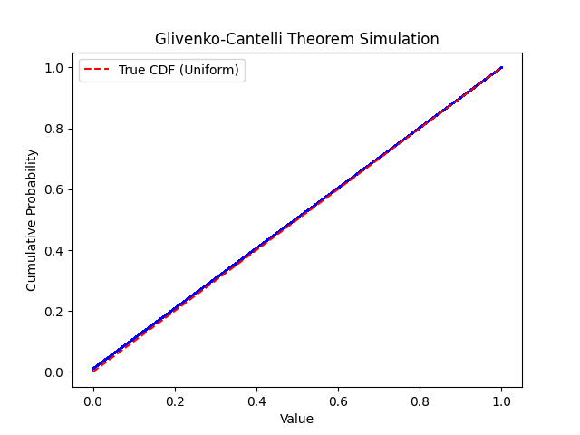

Introduction
The Glivenko-Cantelli Theorems is a fundamental result in probability theory that establishes the convergence properties of the empirical cumulative distribution function (ECDF) to the true cumulative distribution function (CDF). As the sample size increases, the ECDF converges uniformly to the CDF, providing insights into the behavior of sample-based estimators.
The Glivenko-Cantelli Theorem::
The theorem states that, for any true cumulative distribution function F and corresponding empirical counterpart Fn based on n independent and identically distributed samples, the maximum difference between Fn and F converges to zero almost surely as n approaches infinity.
Proof and Concept:
he proof involves showing that, as the sample size grows, the suprema of the absolute differences between the empirical and true cumulative distribution functions tend to zero with high probability. This result has profound implications, highlighting the consistency of sample-based estimators in approximating the true underlying distribution.
Glivenko-Cantelli Theorem Simulation Plot:
This script provides a hands-on illustration of the Glivenko–Cantelli Theorem, emphasizing its significance in understanding the convergence properties of empirical estimates to true distribution functions.